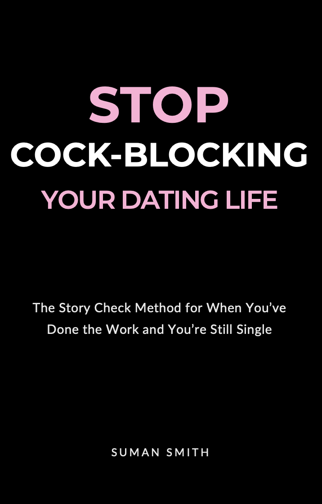
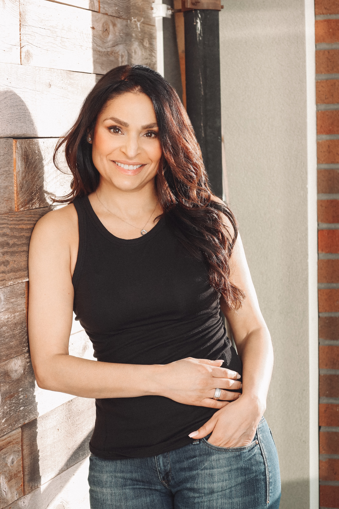

You've worked on yourself. You've been told to raise your standards, lower them, and stop looking. Maybe there really are no good ones left. Or maybe, after the last hurt, a velvet rope went up to keep you safe, and it's doing its job a little too well.
Lift the Velvet Rope is a 3-step method for the few seconds when the rope decides for you, whether it's a first date or year ten. No lowering your standards. No more fixing yourself.
The quiz is free and takes 2 minutes. You'll see what your rope tells you most often.
From Suman Smith: author, the woman who said no to Oprah, maker of engagement rings for nearly 1,000 couples, and married for the first time at 54.
"…you feel like you are being encouraged & coached by a wise & beloved friend who has been through what you have been through."

If you've asked yourself that, some of this may sound familiar.
Nothing is wrong with you. You're just very good at staying safe.
You've probably tried most of it, and some of it helped. But none of it reached the part that actually decides: the few seconds after something happens, when your mind makes it mean something. About you: "I'm too much." About him: "He's not my type." About the whole thing: "There are no good ones left."
That isn't a flaw, and it isn't your fault. It's a velvet rope. It went up after a hurt, for a good reason: to keep you safe. It just can't always tell the people who'd hurt you from the ones who wouldn't.
Lift the Velvet Rope is built for those few seconds.
Three steps. Simple, not easy, because the meaning always feels true while you're inside it.
Notice the rope has gone up. What actually happened, and what am I making it mean?
With the meaning set aside, feel what's left, without judging it or rushing past it.
Make the call from who you want to be, not from old fear.
Lifting the rope doesn't mean lowering your standards. It means checking whether the rope is keeping out only the wrong people, or the right ones too.
He hasn't texted back in two days.
Check the list: What actually happened: he hasn't replied yet. What I'm making it mean: "This always happens. I was too much."
Feel what's real: A drop in my stomach. Disappointment. Some fear.
Lift the rope, or don't: I can feel that without making his silence mean something about my worth. If I want clarity, I can reach out honestly instead of waiting, assuming or playing games.
He walked in, and I'd already decided.
Check the list: What actually happened: I don't love his shoes, and he didn't offer to buy the coffee. What I'm making it mean: "He doesn't make an effort. Not my type." Five minutes in, I'm interviewing him for the exit.
Feel what's real: A flicker of disappointment. And, if I'm honest, relief. An easy no means nobody gets close.
Lift the rope, or don't: Shoes are easy to change. Character isn't. I put the checklist down for one coffee, share something real about my week, and ask him something I actually want to know.
Real red flags come from what someone does and says, not how he looks.
He spends the date on his ex, with no reflection and no ownership.
He drinks a lot, especially when you're not.
He talks about himself all night and never asks you a question.
He shows up late, then asks you to split the bill for his beers.
He makes it clear you'd be on the edge of his life, not in it.
He comes on strong, then goes vague and doesn't follow through.
His words and his actions don't match.
The rope comes from the surface: shoes, looks, whether he's impressive on paper. That's the one to lift.
A friend of mine had been separated for five years and wasn't dating. He said he was working on himself, and he was. When we finally got honest, the real reason came out: he was hoping that if he did enough work, his ex-wife would take him back. He asked her. She said no, and asked to finalize the divorce.
That was his list: "If I just get better, she'll come back." Under it was an older hurt. His first love left when he was 20. He never let himself feel it. He got angry instead, and the meaning he made back then changed the direction of his life.
Right now, he's single. He's also feeling it instead of hiding from it, and he says he's happier in every part of his life than he's been in a long time.
That's what lifting the rope looks like at the start.

I grew up in a culture where love was decided for you. My velvet rope went up at 21, with a first love who cheated and blamed me for everything. First it locked me in, because I didn't believe anyone else would want me. When I finally left, it kept everyone out for years.
At 24, I said no to Oprah, then went on her show to talk about choosing love for yourself. After that came years of long-distance relationships that kept me safely at a distance, and a dating-app ban at 50. Then I reconnected with my Grade 3 crush. I married him at 54.
Since 2007, I've designed engagement rings for nearly 1,000 couples, and listened to their love stories across the table. That taught me how people really choose, and what quietly gets in the way.
If you're wondering whether it's too late for you: it isn't.
"This book is straight-forward & easy to read. The advice makes sense & is practical. Instead of feeling like some distant academic expert is preaching, you feel like you are being encouraged & coached by a wise & beloved friend who has been through what you have been through. I recommend!"
"Great personal stories that offer real practical advise and insights on understanding yourself and how you show up in relationships. Easy read, well written."
"I loved this read. A quick and easy book highlighting honest, real life experiences most people can relate to! The author is vulnerable and funny. Asks the right questions to help you identify how and where you may have cock blocked your love life… and once you uncover it…you’ll be sure to notice when you are up to it again! Good luck lovers of love! You’ve got this!!"
Start with the free quiz. Go deeper when you're ready. Most people begin with the quiz; some go all the way to working with me.
Find out what's on your list, and which meaning you make most often. Get a one-page worksheet and three short emails to help you catch it this week.
Take the quizThe full story behind Lift the Velvet Rope: honest, funny and sometimes painful lessons from my own life. Paperback and Kindle.
Get the bookSeven short videos and a workbook, one real moment a day: the unanswered text, the "boring" kind person, the shoes, the urge to chase.
Join the waitlistThe complete self-paced program in three parts: Check the List, Feel What's Real, Lift the Rope. Find what's on your list, where it came from, and how to choose differently. Includes Lift the Rope in 7 Days.
Join the waitlistBring the guy, the date or the pattern that's driving you nuts. In 45 minutes we'll sort out what's him, what's your rope, and what to do next. One Clarity Call, $197. Want to keep going? The Clarity Intensive is three calls over six weeks, $497, and your $197 counts toward it.
Book a callYes. I met my husband after 50 and married him at 54. It isn't too late.
Yes. Keep the ones about how someone treats you. Lift the Velvet Rope helps you tell those apart from the ones about shoes, sparks and résumés, which are often protection in disguise.
Not from the spark alone. Chemistry often means familiar, not right. Watch whether their words and actions match over time, and whether you can stay yourself around them.
I believe you. Love should add to a full life, not rescue an empty one. The only question is whether you're choosing this, or whether the rope is choosing it for you.
No. It's written from my experience, and the method works for anyone.
No. Lift the Velvet Rope works wherever you meet people, online or off.
No. It's education and personal experience, not a substitute for professional care. If you're struggling, please reach out to a professional or a local crisis line.
Most of us never chose to put the rope up. We get to choose when to lift it. Two minutes, free: see what yours is telling you.